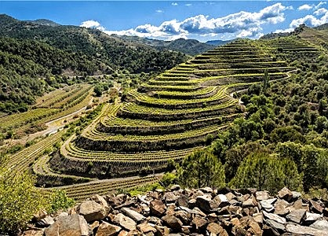
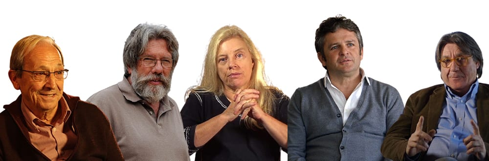

El vino que cambió lo que España podía hacer
A principios de los años ochenta, el Priorat era una comarca deprimida. Las viñas viejas de garnacha y cariñena sobrevivían en terrazas tan empinadas que ninguna máquina podía alcanzarlas. El vino salía de las cooperativas con destino al anonimato. Nadie apostaba por aquellos paisajes áridos, por aquella tierra de llicorella oscura que el calor convertía en ascua. Entonces llegaron cinco personas con una idea que a muchos les pareció una locura.
En 1989, René Barbier, Daphne Glorian-Solomon, Álvaro Palacios, Josep Lluís Pérez y Carles Pastrana se instalaron en Gratallops y sus alrededores con un propósito compartido: demostrar que aquella tierra podía dar vinos de primera línea mundial. Lo hicieron juntos en una primera vendimia, elaborando un único vino bajo el nombre Clos Mogador. Después, cada uno desarrolló su propio proyecto. Lo que vino a continuación es ya parte de la historia del vino español.

Terrazas de llicorella en el Priorat · Viticultura heroica a más de 400 metros sobre el nivel del mar
Una tierra que no perdona y no miente
El suelo del Priorat es llicorella: pizarra oscura y cuarzo que apenas retiene agua. Las raíces de la viña tienen que descender metros buscando humedad, y lo que encuentran a cambio es mineralidad pura. Las terrazas van de los 100 metros de altitud en Bellmunt del Priorat o El Molar, hasta los 750 en las partes altas de La Morera de Montsant o Porrera. Las pendientes prohíben la máquina. La vendimia, a menudo, se hace a mano y a lomo de mulo.
Las variedades protagonistas son la garnacha y la cariñena, muchas veces de cepas centenarias. Los Cinco Magníficos también introdujeron cabernet sauvignon, syrah y merlot, que encontraron en aquel terroir condiciones que ninguno había imaginado. El resultado: vinos explosivos, de alta concentración, con columna vertebral de mineralidad y una capacidad de evolución en botella que pocos territorios de España pueden igualar.

Josep Lluís Pérez · René Barbier · Daphne Glorian · Álvaro Palacios · Carles Pastrana
Quiénes son, de dónde vienen, qué hicieron
01 · René Barbier — Clos Mogador, Gratallops
El cabecilla y, en cierto modo, el origen de toda la historia. Nacido en Tarragona en 1950, Barbier se formó en Francia en bodegas como Moueix —los elaboradores del mítico Petrus— y en 1979 adquirió su primera finca en el Priorat. Fue él quien convenció a los otros cuatro para sumarse al proyecto: conocía el territorio, hablaba catalán y entendía las resistencias del lugar. Cuando todos llegaron, Barbier era ya el anfitrión. Su vino, Clos Mogador, lleva el nombre de la primera vendimia compartida de 1989 y sigue siendo uno de los referentes absolutos de la denominación.
02 · Daphne Glorian-Solomon — Clos i Terrasses · Clos Erasmus, Gratallops
De origen anglosajón, llegó al Priorat por mediación de Barbier y Palacios. Fundó en 1989 Clos i Terrasses en Gratallops con solo dos referencias: Clos Erasmus y Laurel. El nombre Erasmus lo tomó del humanista Erasmo de Rotterdam, en homenaje a su padre. El nombre Laurel viene del griego Daphne. Su producción no supera las 23.000 botellas, de las que más del 80% se exporta. El Clos Erasmus obtuvo 99 puntos Parker en 1994 y 100 puntos perfectos en 2004 y 2005. Trabaja en biodinámica desde 2004 y combina barricas de Borgoña, depósitos de hormigón y ánforas. Una bodega pequeña con una huella global desproporcionada.
Era como llegar a la luna. Una sensación particular. Hay muchas regiones vinícolas preciosas en el mundo, pero el Priorat tiene un carácter fascinante. Desde el primer momento me quedé prendada de él.
Daphne Glorian · Clos i Terrasses · Gratallops
03 · Álvaro Palacios — L'Ermita · Finca Dofí, Gratallops
Nacido en Alfaro, La Rioja, en 1964, llegó siendo el más joven del grupo y con formación de primer nivel: había pasado por Petrus en Pomerol y por algunas de las mejores bodegas de Burdeos. Su instinto para la comunicación y el marketing, combinado con una visión casi artística del vino, lo convirtió en el rostro más reconocible de la nueva era del Priorat. L'Ermita, elaborado a partir de garnacha vieja en parcelas de pendiente extrema junto a la ermita de la Mare de Déu de la Consolació, se convirtió en el vino más preciado de España. Su aparición en una subasta de Christie's en Nueva York —con botellas que superaban los 500 euros— fue el hito que anunció al mundo que el Priorat había llegado para quedarse.
04 · Josep Lluís Pérez — Mas Martinet, Falset
El más técnico del grupo. Pérez llegó al Priorat con formación enológica sólida y una mirada científica sobre el territorio que complementó el instinto más intuitivo de sus compañeros. Desde Mas Martinet, en Falset, desarrolló una filosofía orientada a la expresión pura del terroir, con producciones pequeñas y una enología de baja intervención. Su influencia sobre la siguiente generación de viticultores de la zona ha sido enorme: muchos de los nombres que hoy destacan en la DOQ pasaron por su escuela o bebieron de su forma de entender la relación entre suelo, cepa y bodega.
05 · Carles Pastrana — Clos de l'Obac, Gratallops
El más enraizado en el territorio. Pastrana elabora Clos de l'Obac desde Gratallops con una filosofía que sitúa la garnacha y la cariñena autóctonas en el centro de todo. Menos mediático que Palacios, menos técnico que Pérez, representa la continuidad tranquila: el viticultor que trabaja la tierra cada temporada con la misma convicción del primer día. Sus vinos son una declaración de identidad del Priorat histórico, sin concesiones a las modas ni a los mercados. En un sector donde la fama cotiza, Pastrana eligió quedarse a hacer buen vino.
Por qué el Priorat nos pertenece también a nosotros
La conexión entre el Priorat y el Camp de Tarragona no es solo sentimental ni solo administrativa. El Priorat forma parte histórica de la provincia de Tarragona, comparte con el Camp un clima mediterráneo de interior y una cultura agraria donde la viña ha sido siempre eje vertebrador. René Barbier nació en Tarragona en 1950. En cierto modo, la historia del resurgir del Priorat tiene raíces literalmente tarraconenses.
Desde el punto de vista gastronómico, los vinos del Priorat llevan décadas en las cartas de los mejores restaurantes del Camp. La DOQ Priorat, el Montsant y la DO Tarragona forman un territorio vinícola continuo donde las bodegas comparten ferias, distribuidores y clientela. No es raro encontrar en una misma mesa de Cambrils, Salou o Reus referencias del Priorat que serían objeto de lista de espera en cualquier capital europea. En más de una visita de la asociación hemos comprobado que el vino del Priorat viaja bien hasta nuestras mesas. Y que nos sienta muy bien.
El legadoLos Nombres de la Tierra: una clasificación para el futuro
Lo que empezó como una apuesta de cinco personas con escasos medios y mucha convicción se convirtió en el motor de una de las transformaciones más rápidas de la historia del vino español. En 2009, el Priorat se convirtió en DOQ —Denominació d'Origen Qualificada—, la segunda de España junto con la DOCa Rioja.
La denominación ha desarrollado en los últimos años los Nombres de la Tierra: una clasificación inspirada en los grandes territorios vinícolas europeos que va desde el vino de la DOQ Priorat hasta el vino de gran viña clasificada, parcela a parcela. Una apuesta por la transparencia y la trazabilidad que demuestra que la revolución iniciada en 1989 todavía no ha terminado. Cinco personas plantaron la semilla de algo que hoy forma parte del patrimonio vinícola de Cataluña y del mundo. Y que, de paso, puso a Tarragona en el mapa global del vino.
Fuentes consultadas: VadeVi / El Món, Verema.com, documental Priorat (David Fernández de Castro, 2016), DOQ Priorat